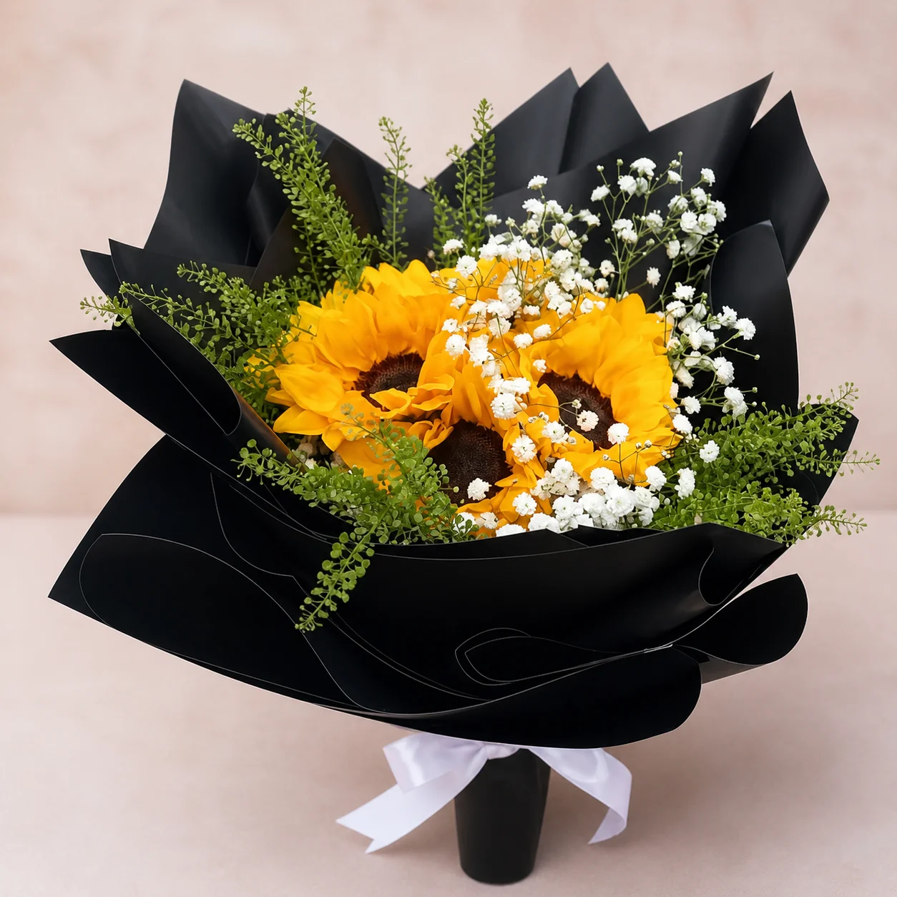

Desayunos Sorpresa
Nuestros desayunos sorpresa son cestas con temática trabajadas al detalle para que la jornada inicie con emoción, calidez y los sabores más selectos, ideales para festejar aniversarios mañaneros, cumpleaños, Día de la Madre, San Valentín o simplemente para hacer saber a alguien lo importante que es en las primeras horas del día. Cada cesta lleva un arreglo floral fresco de temporada en colores vibrantes y alegres, panes artesanales recién horneados con aromas que enamoran, café gourmet seleccionado con cuidado para cada celebración y delicias matutinas como croissants, muffins, galletas hechas a mano y mermeladas elegidas. La presentación es impecable en cestas de mimbre o recipientes reutilizables ornamentados con cintas temáticas y tarjetas personalizadas. Disponemos de modalidades que van desde desayunos íntimos para parejas hasta propuestas familiares, alternativas veganas y libres de gluten, e incluso versiones corporativas para impresionar a equipos o clientes destacados. Cada despacho se gestiona en la mañana para garantizar la frescura de todos los productos y la total complacencia de quien lo recibe.


Canastas de Frutas y Flores
Nuestras canastas de frutas y flores son la unión perfecta de salud, hermosura natural y elegancia, diseñadas para quienes aprecian el bienestar, la alimentación responsable y la estética reunidos en un solo regalo inolvidable. Cada canasta es una composición comestible que conjuga frutas frescas de temporada, escogidas por su calidad, sabor y apariencia, con arreglos florales que enaltecen los tonos naturales creando una armonía visual sobresaliente. Sumamos frutas exóticas como pitahayas, maracuyás y mangos junto a clásicas como manzanas, peras, uvas y fresas, todas dispuestas con arte al lado de girasoles, rosas, alstroemerias y follaje decorativo. La presentación cambia entre cestas tejidas a mano, cajas de madera rústica o recipientes modernos según el estilo deseado, con papel de seda natural y cintas orgánicas. Resultan perfectas para regalos corporativos que demuestran cuidado por la salud, obsequios para personas en recuperación, premios por logros deportivos o académicos, y muestras de cariño para quienes cuidan su alimentación. Cada canasta trae información sobre las frutas y consejos de conservación para extender al máximo la experiencia.
Canastas para Bebés
Nuestras canastas para bebés son obsequios singulares pensados para celebrar la llegada de una nueva vida y acompañar a las familias en uno de los momentos más conmovedores e irrepetibles. Cada canasta combina la dulzura de las flores con elementos prácticos y entrañables para los recién nacidos, logrando un detalle que es funcional y a la vez profundamente significativo. Los arreglos florales utilizan flores suaves en tonos pastel como rosas en blanco y rosado, lirios blancos, baby breath y flores de temporada en colores delicados que evocan ternura e inocencia. Los artículos para el bebé contemplan prendas de algodón orgánico en tallas newborn y 0-3 meses, baberos bordados, mantas hipoalergénicas suaves, productos de higiene para piel sensible, juguetes de estimulación certificados, chupetes de silicona sin BPA y peluches con materiales seguros. Personalizamos cada canasta según el género o con paletas neutras si la noticia es sorpresa, agregamos tarjetas especiales para los padres y brindamos la opción de bordar el nombre del bebé en prendas escogidas. Se entregan en recipientes reutilizables ideales para guardar después los artículos del bebé, decorados con cintas de raso y papel tissue en colores coordinados, logrando una presentación inolvidable y perfecta para fotografiar.


Canastas Gourmet
Nuestras canastas gourmet son la versión más sofisticada del regalo floral, conjugando flores premium con una esmerada selección de productos delicatessen capaces de satisfacer los paladares más exigentes. Cada canasta es una experiencia gastronómica completa con arreglos elegantes de orquídeas, rosas de jardín, peonías o flores exóticas según la temporada, acompañadas de productos gourmet locales e importados de altísima calidad. La oferta culinaria reúne quesos artesanales curados, embutidos premium, aceites de oliva extra virgen, vinagres balsámicos, chocolates belgas o suizos, vinos de bodegas reconocidas, champagne para ocasiones especiales, pâtés y terrinas, mermeladas artesanales, frutos secos selectos y panes gourmet. Cada artículo es escogido por conocedores de gastronomía y combinado con dedicación para generar una experiencia sensorial inolvidable. Idóneas para obsequios corporativos de alto nivel, aniversarios trascendentes, cenas románticas, distinciones a clientes VIP o cualquier circunstancia que requiera un detalle de máxima elegancia. La presentación se realiza en cajas de madera noble, cestas de mimbre premium o recipientes de lujo que se convierten en piezas decorativas, con fichas que describen el origen y las características de cada producto.